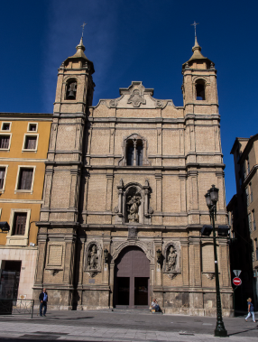
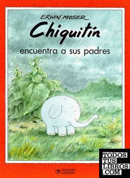
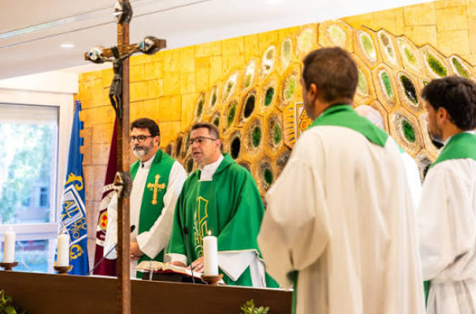

Retrato oficial. Fuente: Dicasterio de las Causas de los Santos.
Venerable Pedro Díez Gil de la Virgen del Carmen
– · Sacerdote escolapio
Santidad sencilla, construida en la fidelidad diaria a la vocación de educar y servir, según el espíritu de San José de Calasanz.
Esta página te invita a conocer quién fue, qué aportó a la educación, cuál fue su testimonio y cómo avanza su causa hacia la beatificación.
Biografía
Una vida entera dedicada a la enseñanza y al servicio, desde Pampliega hasta Zaragoza.
Nace en Pampliega (Burgos), primogénito de Domingo y Carmen.
1921–1924
La familia llega a Tolosa, donde conoce a los escolapios. Primera Comunión (1922) y Confirmación (1924).
1926
Ingresa en el postulantado de las Escuelas Pías en Zaragoza, formado por el beato Manuel Segura. Continúa en Peralta de la Sal con el beato Faustino Oteiza.
Profesión temporal.
Profesión solemne en Albelda de Iregua.
1937
Ordenado sacerdote. Al inicio de la Guerra Civil es capellán militar en el frente, donde comienza la úlcera de estómago que ya no lo abandonó.
1939
Regresa a Zaragoza, al Colegio de las Escuelas Pías de Santo Tomás de Aquino, donde permanece 46 años.
Fallece en Zaragoza. Sus restos descansan bajo el altar de la Virgen del Pilar de esa iglesia.

Colegio Santo Tomás de Aquino, Zaragoza.
Obra y testimonio
Labor educativa
Dedicó su vida a la educación de los párvulos y a la vida pastoral del barrio de San Pablo.
Creó, junto al escolapio Joaquín Erviti Lazcano, el método ideológico-fonomímico de lectoescritura.
Escribió el libro "Chiquitín", usado durante décadas en escuelas de toda España.
Difundió el método en congresos pedagógicos y con soldados en cuarteles.
En 1973 recibió la Medalla al Mérito en el Trabajo, categoría Plata.

Portada del libro Chiquitín.
Vida espiritual
Se lo recuerda como un hombre sencillo y menudo, unido al Señor en la Eucaristía y devoto de la Virgen María.
Confesor de cuatro comunidades escolapias.
Capellán de la Adoración Nocturna desde 1956.
Consiliario de la Conferencia de San Vicente de Paúl desde 1969, atendiendo a enfermos, ancianos y moribundos del barrio.
Vivió el cuarto voto escolapio de la enseñanza "con pasión y de modo heroico".
Camino a los altares
Su causa se abrió en 1989. El 20 de mayo de 2023 el papa Francisco reconoció sus virtudes heroicas y lo declaró Venerable. Falta un milagro para su beatificación y otro más para su canonización.
Etapas del proceso de canonización
Etapa
Título otorgado
Fecha
Apertura de la causa
Inicio del proceso
1989
1.ª etapa
Siervo de Dios
12 de noviembre de 1999
2.ª etapa (actual)
Venerable
20 de mayo de 2023
3.ª etapa (pendiente)
Beato
Requiere un milagro
4.ª etapa (pendiente)
Santo
Requiere un segundo milagro
Su lugar en las Escuelas Pías
Fue sacerdote profeso de la Orden de los Clérigos Regulares Pobres de la Madre de Dios de las Escuelas Pías (escolapios), fundada por San José de Calasanz. Además de pobreza, castidad y obediencia, profesó el cuarto voto propio de la Orden: dedicarse a la educación de la niñez. Formado por dos beatos escolapios y junto a Joaquín Erviti Lazcano, representa la renovación pedagógica escolapia del siglo XX.

Eucaristía de acción de gracias en la Basílica del Pilar. Fuente: Escuelas Pías.
Legado
Santidad sencilla, construida en la fidelidad diaria a la vocación de educar y servir.
Pedagógico
El método fonomímico y el libro Chiquitín modernizaron la enseñanza de la lectoescritura infantil en España.
Espiritual
Su sencillez, su cercanía a niños y enfermos, y su vida eucarística y mariana son hoy modelo escolapio.
Eclesial
Su causa, abierta en 1989, avanza hacia la beatificación y es referencia para religiosos y exalumnos.
Devocional
En Zaragoza se lo recuerda como figura del barrio de San Pablo; su tumba es lugar de visita y oración.
Te invitamos a seguir su ejemplo y a orar por su causa.